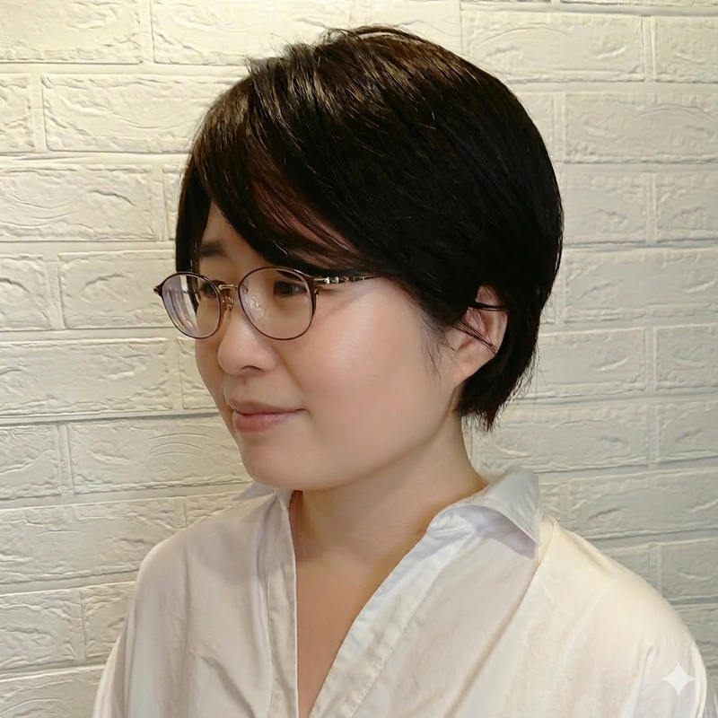

福岡市を拠点に、子育て家族への地域アウトリーチと
居場所づくりに取り組むNPO法人です。

宮島篤子 代表理事 ／ 臨床心理士・公認心理師・看護師・4児の母
福岡市委託事業。保育現場へ専門家が訪問し、子どもと保育者をともに支援します。
子どもの居場所・食事・学習支援のコミュニティ事業。一緒にご飯を食べて、学びます。
孤立しがちな子育て家族に、地域からつながりを届けます。
子育て中の家族が「まず話せる場所」があること。それが、すべての出発点だと思っています。専門的な支援だけでなく、ご飯を一緒に食べること、顔見知りができること。そんな当たり前が、誰かの安心になる。
4人の子を育てながら、臨床心理士・公認心理師・看護師として福岡の地域に根ざして活動しています。